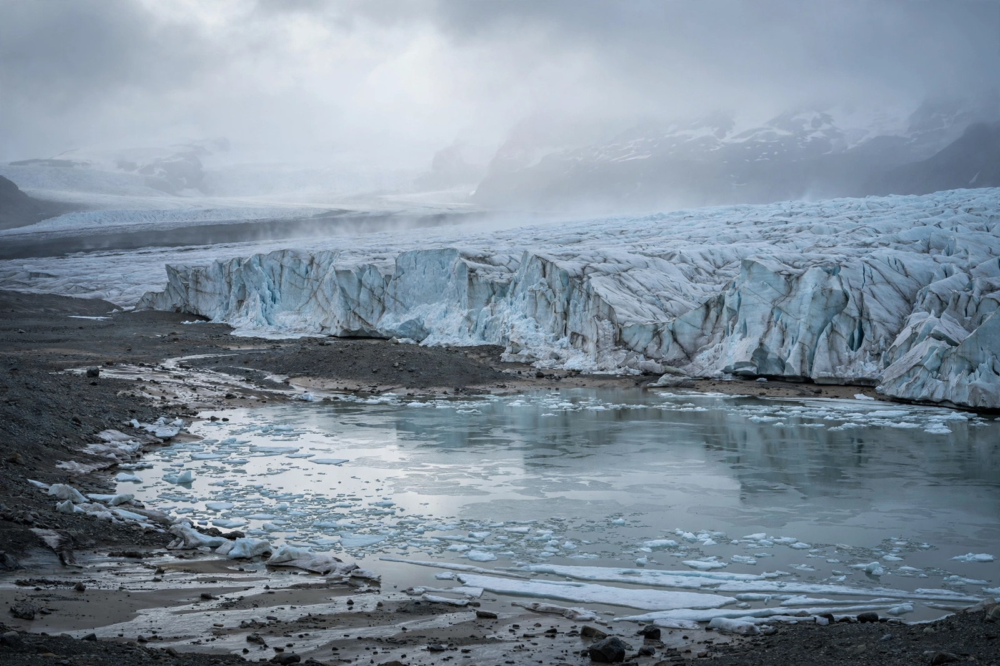

Younger Dryas

| Younger Dryas | |
|---|---|
| Interval | c. 12,900 – 11,700 years ago |
| Duration | ~1,200 years |
| Named for | Dryas octopetala (mountain avens) |
| Epoch | Late Pleistocene |
The Younger Dryas (YD, also referred to as the Große Dryas) was a period between approximately 12,900 and 11,700 years ago, marked by a return to near-glacial conditions across much of the Northern Hemisphere. It interrupted the warming trend that had followed the Last Glacial Maximum and delayed the onset of the warm Holocene epoch. The event is named after the alpine–arctic wildflower Dryas octopetala, whose pollen became abundant in Scandinavian lake sediments deposited during the cold interval.
Cooling began abruptly — in Greenland, much of the temperature drop of roughly 10 °C may have occurred within a decade — and the cold conditions persisted for about 1,200 years before ending with an equally abrupt warming that marks the start of the Holocene. Evidence for the event appears in ice cores, lake and ocean sediments, and pollen records across the North Atlantic region, with related signals reported worldwide.
Causes
The leading explanation attributes the Younger Dryas to a surge of cold freshwater into the North Atlantic — most often linked to the drainage of glacial Lake Agassiz and meltwater from the retreating Laurentide Ice Sheet. The freshwater cap would have weakened the Atlantic meridional overturning circulation, reducing the northward transport of heat and plunging the region back into cold conditions, with a "seesaw" warming in the Southern Hemisphere. A minority hypothesis proposes that an extraterrestrial impact triggered the cooling; this remains contested, with disputed evidence including nanodiamonds and impact spherules at sites such as Abu Hureyra.
Effects
In North America the Younger Dryas coincides with the extinction of much of the Pleistocene megafauna and with changes in the Clovis culture, though the relative roles of climate and human hunting remain debated. In the Levant, the cooling and drying may have encouraged the sedentary Natufian communities' experiments that preceded the origins of agriculture.
See also: Bølling–Allerød Interstadial · 8.2-kiloyear event · Dansgaard–Oeschger event